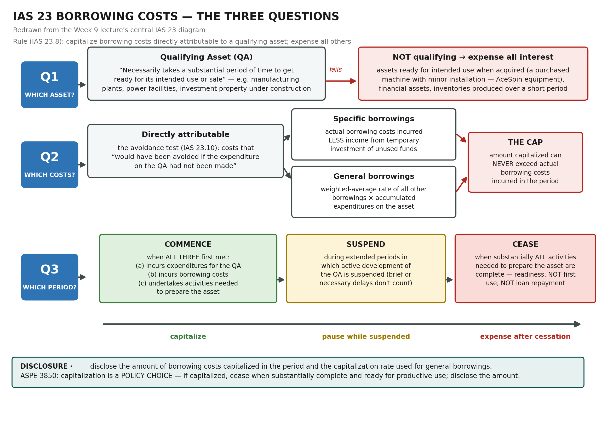
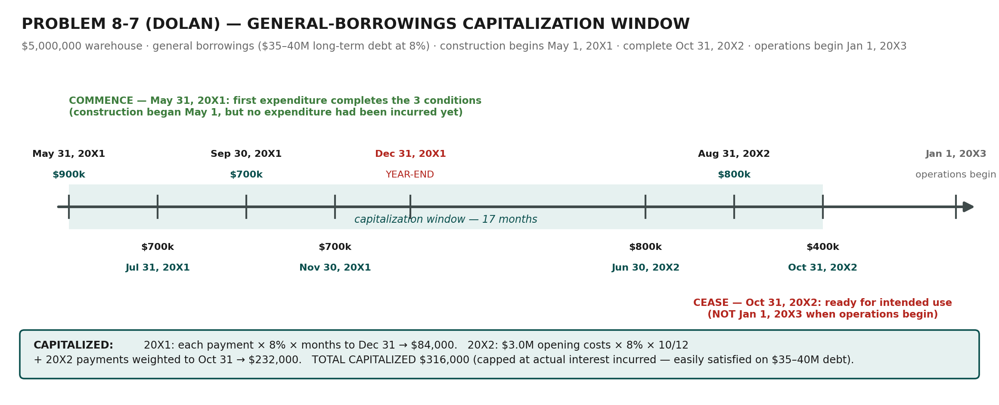
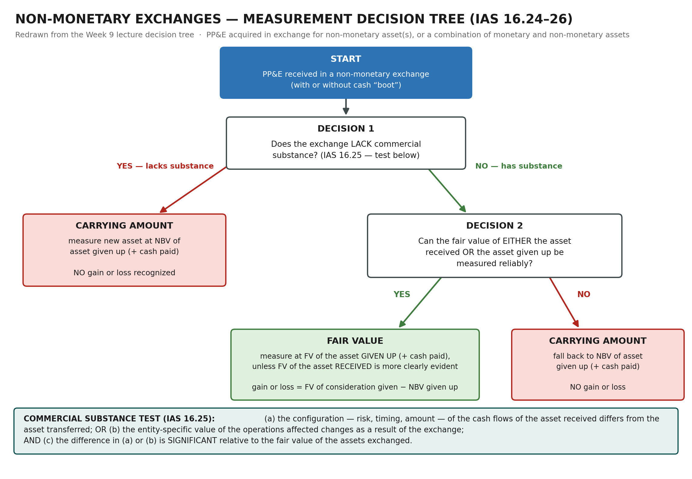

| HOW TO USE THIS DOCUMENT First pass (deep learning): read straight through — every rule is followed by the lecture problem that tests it. Second pass (application): re-work Problems 8-3, 8-7, 8-9, P8-54 and the Kimberley/Nanaimo examples cold, then check against the worked tables here. Final pass (night before): §13 traps + formulas, then the 2-page Quick Reference. The AceSpin PBL has its own companion: the Week 9 Case Application Guide. |
|---|
| TESTABLE SCOPE Week 9 in: classification & recognition · elements of cost (incl. deferred payment terms and bundled purchases) · borrowing costs (IAS 23) · replacements / repairs / betterments · components · non-monetary exchanges · depreciation timing & partial years · PP&E in the cash-flow statement and IFRS 18 categories. Out (Ch. 10, later): revaluation-model mechanics and impairment mechanics — know only that IFRS permits the revaluation model and ASPE does not. |
|---|
1. The Map: Three Questions, One Hinge (Capitalize vs Expense)
Chapter 8 asks three questions about every item of PP&E, in the order the asset lives its life. Week 9 is almost entirely the first question, plus the parts of the second that lecture problems need (depreciation timing, components).
| # | Big question | What it decides | Where answered |
|---|---|---|---|
| 1 | Initial recognition & measurement | What is an asset, and what did it cost? | §2–§7 (Week 9 core) |
| 2 | Subsequent measurement | How much at each reporting date? (depreciation, components) | §6, §8 + pre-lectures |
| 3 | Derecognition | When does it leave the balance sheet, at what gain/loss? | §5 (replacement losses), §7, §9 |
| WHY IT MATTERS Every Week 9 judgment is one hinge: capitalize (asset now, expense later through depreciation) vs expense now. Capitalizing shifts cost out of this year's income into future years and inflates today's asset base. That is why each rule below exists, why each has an anti-abuse edge (the IAS 23 cap, the commercial-substance test), and why §11 treats every judgment as an earnings-quality risk. |
|---|
The reporting issues tested this week, mapped to where each is resolved:
| Reporting issue | Standard | The one-line answer |
|---|---|---|
| Classification as PP&E | IAS 16.6 | Tangible · held for use in production/supply/rental/admin · > one period |
| Recognition | IAS 16.7 | Probable future economic benefits + cost reliably measurable |
| Elements of cost | IAS 16.16–17, 19 | Purchase price + directly attributable costs + dismantling (ARO); never opening/advertising/training/overhead |
| Deferred payment terms | IAS 16.23 | Beyond normal credit terms → cost = cash price equivalent (PV); difference is interest |
| Borrowing costs | IAS 23 | Capitalize if directly attributable to a qualifying asset; expense all others |
| Replacement vs repair | IAS 16.12–13 | Replace significant part → capitalize new + derecognize old; day-to-day servicing → expense |
| Betterment vs maintenance | ASPE 3061.14 | Enhances service potential → capitalize; maintains it → expense |
| Components | IAS 16.43–45 | Significant parts with different lives/patterns → depreciate separately |
| Non-monetary exchange | IAS 16.24–26 / ASPE 3831 | FV if commercial substance + reliable FV; otherwise carrying amount, no gain/loss |
2. Classification & Recognition — and How to Write the Answer
2.1 The two-layer test
Layer one is the Conceptual Framework's asset definition: (a) a right with the potential to produce economic benefits; (b) that the entity controls; (c) as a result of a past event. Layer two is the PP&E-specific test:
| IAS 16.6 — PP&E if all three | Typical case evidence |
|---|---|
| (a) Tangible | Physical substance — a machine, building, vehicle |
| (b) Held for use in production or supply of goods/services, for rental, or for administration | “used in the production of tennis equipment” — not held for resale (inventory) or capital appreciation (investment property) |
| (c) Used > one period | Useful life stated in years |
Recognition (IAS 16.7) then requires that (a) it is probable that future economic benefits associated with the item will flow to the entity, and (b) its cost can be measured reliably. In construction and upgrade scenarios both are nearly always met — a negotiated price with an independent vendor settles reliability; use in profitable operations settles probability. Do not skip the steps, though: the marks are for connecting each criterion to a quoted case fact.
| KEY RULE Write PBL answers as a three-column table: criterion (quoted) | case fact | met?. Every lecture solution this week (8-3, 8-9, AceSpin) uses exactly that format, ending with a one-line conclusion. A criterion asserted without a case fact earns nothing. |
|---|
2.2 “Future economic benefit” is broader than revenue
Safety and environmental assets (IAS 16.11) may produce no extra output, yet they qualify: a pollution-abatement scrubber required for an operating permit lets the entity derive future economic benefits from related assets in excess of what it could otherwise — without it, the whole plant stops. The textbook's Invermere discussion pushes the same idea further: site decontamination that makes raw land developable is a cost of the land, and mandated public amenities are a judgment call between land and building. ASPE 3061 reads almost identically and adds that spare parts and stand-by equipment held for continuing use are PP&E, not inventory.
3. Elements of Cost: What Goes In, What Stays Out (Problem 8-3)
3.1 The master principle
IAS 16.16: cost comprises (a) purchase price (incl. import duties and non-refundable taxes, net of discounts/rebates), (b) any costs directly attributable to bringing the asset to the location and condition necessary for it to be capable of operating in the manner intended by management, and (c) the initial estimate of dismantling, removal and site-restoration costs (the ARO). Paragraph 17 gives the classic directly-attributable list: employee benefits from construction, site preparation, delivery and handling, installation and assembly, testing, professional fees.
IAS 16.19 closes the door on four families of costs that never capitalize, however construction-flavoured they feel: costs of opening a new facility; of introducing a new product or service (advertising, promotion); of conducting business in a new location or with a new class of customer (staff training); and administration and general overhead.
3.2 Worked — Problem 8-3 (LSM factory, the lecture's core table)
LSM, a public company, builds a $25M+ factory. Each expenditure gets the same one-question audit: would this cost have been necessary to bring the factory to the location and condition for its intended use?
| Item | Treatment | Why |
|---|---|---|
| $25,000,000 contract price | Capitalize | The asset itself |
| $1,000,000 design changes & cost overruns | Capitalize | Directly attributable construction cost |
| $50,000 legal fees re construction | Capitalize | Professional fees (IAS 16.17(f)) |
| $100,000 feasibility & design study | Capitalize | Necessary to determine design/facility needs |
| $110,000 property taxes during construction | Capitalize | Cost of holding the asset while bringing it to condition |
| $500,000 president's salary (¼ year on project) | Expense | General overhead (16.19(d)) — she is paid regardless; textbook allows a supported time-based split when documented |
| $300,000 injured-worker settlement | Expense | Not necessary to bring the asset to condition — a cost of the accident, not the asset |
| $40,000 advertising the factory opening | Expense | Cost of opening a new facility (16.19(a)) |
| $35,000 property taxes after completion | Expense | Asset already in the condition for intended use — capitalization window is over |
| EXAM TRAP The property-tax split is the give-away detail: $110,000 during construction capitalizes; the further $35,000 after completion but before occupancy expenses. Readiness ends capitalization — actual occupancy is irrelevant. The same readiness logic returns in IAS 23 (§4) and depreciation commencement (§8). |
|---|
3.3 Bundled purchases — relative fair value
One price, several assets → allocate by relative fair value at acquisition. Nelson Commercial Properties buys a shopping centre for $192M when component FVs total $200M (land $80M, land improvements $10M, building $110M):
| Component | % of total FV | × price | Allocated cost |
|---|---|---|---|
| Land | 80/200 = 40% | × $192M | $76.8M |
| Land improvements | 10/200 = 5% | × $192M | $9.6M |
| Building | 110/200 = 55% | × $192M | $105.6M |
| QUALITY-OF-EARNINGS TRAP Land is non-depreciable. Every appraisal dollar shifted from building to land permanently reduces future depreciation — shifting $10M against a 20-year straight-line building flatters income by $500,000 a year, forever, with zero cash effect. Aggressive land allocations in bundled purchases are a standing PBL red flag (§11). |
|---|
3.4 Deferred payment terms — cash price equivalent
When payment is deferred beyond normal credit terms, cost is the cash price equivalent: the present value of the payments at the buyer's borrowing rate. The excess of nominal payments over PV is interest, recognized as expense over the credit period via the effective-interest method (note accretion) — it is not part of the asset's cost, and (for a purchased, ready-to-use asset) it is not capitalizable borrowing cost either. AceSpin's equipment is the full worked application: $3,855,000 nominal over two years discounts to $3,691,315 at 5%; see the Case Application Guide.
4. Borrowing Costs (IAS 23): The Three-Question Flow (Problem 8-7)
4.1 Why capitalize interest at all?
A self-constructed plant's cost should be comparable to the price of buying one ready-made — and a contractor's price would embed its financing costs during construction. IAS 23.8 therefore requires capitalizing borrowing costs directly attributable to the acquisition, construction or production of a qualifying asset; all other borrowing costs are expensed. “Directly attributable” has a precise meaning (IAS 23.10): costs that would have been avoided if the expenditure on the qualifying asset had not been made — an avoidance test, not a tracing test.

The lecture's central IAS 23 diagram, reorganized as the three questions you answer in exam order: which asset → which costs → which period.
Specific borrowings capitalize their actual cost less any income from temporarily investing unused funds. General borrowings capitalize at the weighted-average rate of all other borrowings × accumulated expenditures on the asset. Either way the total capitalized in a period can never exceed the actual borrowing costs the entity incurred — the cap that stops capitalization of a financing cost the entity never had.
4.2 Worked — Problem 8-7 (Dolan: general borrowings, two fiscal years)
Dolan builds a $5,000,000 warehouse, paid in instalments, financed from internal funds while carrying $35–40M of 8% long-term debt (general borrowings). Construction runs May 1, 20X1 – Oct 31, 20X2; operations begin Jan 1, 20X3.

The lecture timeline. Note where the window starts and — just as important — where it ends.
Commencement is May 31, 20X1, not May 1: capitalization starts when the entity first meets all three conditions — expenditures incurred, borrowing costs incurred, activities under way. Construction activity began May 1, but the first expenditure (the last missing condition) lands May 31. Cessation is Oct 31, 20X2 — readiness for intended use — giving 17 months. For general borrowings, each payment accrues interest at 8% from its own date:
| 20X1 payment | Amount ($) | Rate | Months to Dec 31, 20X1 | Interest ($) |
|---|---|---|---|---|
| May 31, 20X1 | 900,000 | 8% | 7 / 12 | 42,000 |
| Jul 31, 20X1 | 700,000 | 8% | 5 / 12 | 23,333 |
| Sep 30, 20X1 | 700,000 | 8% | 3 / 12 | 14,000 |
| Nov 30, 20X1 | 700,000 | 8% | 1 / 12 | 4,667 |
| Total 20X1 | 3,000,000 | 84,000 |
| 20X2 layer | Amount ($) | Rate | Months to Oct 31, 20X2 | Interest ($) |
|---|---|---|---|---|
| 20X1 accumulated costs | 3,000,000 | 8% | 10 / 12 | 200,000 |
| Jun 30, 20X2 | 800,000 | 8% | 4 / 12 | 21,333 |
| Aug 31, 20X2 | 800,000 | 8% | 2 / 12 | 10,667 |
| Oct 31, 20X2 | 400,000 | 8% | 0 / 12 | 0 |
| Total 20X2 | 5,000,000 | 232,000 |
Total capitalized: $84,000 + $232,000 = $316,000. Each year-end the entry moves the interest out of expense and into the asset:
| Dec 31, 20X1 — capitalize 20X1 borrowing costs (same pattern in 20X2 for 232,000) | Dec 31, 20X1 — capitalize 20X1 borrowing costs (same pattern in 20X2 for 232,000) | Dec 31, 20X1 — capitalize 20X1 borrowing costs (same pattern in 20X2 for 232,000) |
|---|---|---|
| Dr PP&E — Warehouse | 84,000 | |
| Cr Interest Expense | 84,000 |
| EXAM TRAP Three places 8-7 loses marks. (1) Starting the window May 1 — all three commencement conditions must be met, and the first expenditure was May 31. (2) Running the window to Jan 1, 20X3 — it closes at readiness (Oct 31, 20X2), not first use, not loan repayment. (3) In 20X2, forgetting the 20X1 accumulated $3.0M carries interest for the full 10 months before adding the 20X2 payments. |
|---|
4.3 The cap in action — textbook Exhibit 8-4
Three companies each spend $100M constructing a qualifying asset; the general capitalization rate is 7%:
| Company A | Company B | Company C | |
|---|---|---|---|
| Construction-specific borrowing | — | $80M at 9% → $7.2M | — |
| General borrowings applied | $100M × 7% = $7.0M | $20M × 7% = $1.4M | $40M × 7% = $2.8M |
| Computed attributable interest | $7.0M | $8.6M | $2.8M |
| Actual total interest incurred (ceiling) | $15.45M | $15.45M | $2.6M |
| Capitalized (lesser) | $7.0M | $8.6M | $2.6M |
Company C is the trap: only $40M of the $100M build was debt-financed (the rest internal/equity funds, which IFRS never capitalizes), and even the computed $2.8M is capped at the $2.6M the company actually incurred.
4.4 ASPE, and why the rule is philosophically awkward
ASPE 3061.11/3850 makes capitalization a policy choice — capitalize or expense, applied consistently, amount disclosed, ceasing when the asset is substantially complete and ready for productive use. The textbook's four Invermere financing scenarios expose the tension in the IFRS rule: economically identical projects capitalize different amounts depending on legal form (specific loan vs general pool vs contractor-embedded financing vs equity). IFRS buys comparability at some cost to faithful representation of economic substance — a ready-made critique paragraph for any “discuss” question.
5. Replacements, Repairs & Betterments (Problem 8-9 + Kimberley)
5.1 The IFRS split (IAS 16.12–13)
| Repairs & maintenance | Replacement of a part | |
|---|---|---|
| Nature | Day-to-day servicing: labour, consumables, small parts | Significant part replaced at intervals, or a non-recurring replacement (interior walls, roof, engine) |
| Relative cost / frequency | Small, recurring | Significant, irregular or one-time |
| Treatment | Expense as incurred | Capitalize new cost + derecognize carrying amount of old part (loss) |
5.2 Worked — Problem 8-9 Case D (earth-mover unloader)
A $400,000 cash upgrade lets earth-moving equipment self-unload; management estimates $70,000/year of savings for 6 years. Run the asset criteria: potential economic benefits (the documented savings), control (entity owns the equipment), past event (upgrade acquired) — met. Recognition: benefits probable, price set by an independent supplier — met. Not day-to-day servicing → capitalize:
| Upgrade completed — capitalize the unloader | Upgrade completed — capitalize the unloader | Upgrade completed — capitalize the unloader |
|---|---|---|
| Dr PP&E — Unloader (Earth-Mover) | 400,000 | |
| Cr Cash | 400,000 |
Note the source of benefit: cost savings count as future economic benefits — an asset does not need to raise output to qualify.
5.3 Worked — Kimberley roof replacement (never componentized)
Kimberley spends $3M replacing Building 22's roof with a green roof. The building cost $12M and now stands at $8M carrying value (accumulated depreciation $4M). The old roof was never set up as a component — so estimate its share (~20% of the building's value) and pull it out at that fraction of both cost and accumulated depreciation:
| Step | Computation | Amount |
|---|---|---|
| Old roof cost portion | 20% × $12,000,000 | $2,400,000 |
| Old roof accumulated depreciation | 20% × $4,000,000 | $800,000 |
| Old roof carrying value → loss | $2,400,000 − $800,000 | $1,600,000 |
| Replacement date — derecognize old roof, capitalize new | Replacement date — derecognize old roof, capitalize new | Replacement date — derecognize old roof, capitalize new |
|---|---|---|
| Dr Accumulated Depreciation — Building 22 | 800,000 | |
| Dr Loss on Roof Replacement | 1,600,000 | |
| Cr Building Cost — Building 22 | 2,400,000 | |
| Dr Building Cost — Building 22 (new roof) | 3,000,000 | |
| Cr Cash | 3,000,000 |
| Continuity | Cost ($) | Accum. dep. ($) | Carrying value ($) |
|---|---|---|---|
| Before replacement | 12,000,000 | 4,000,000 | 8,000,000 |
| Remove old roof (20%) | (2,400,000) | (800,000) | (1,600,000) |
| Add new roof | 3,000,000 | 0 | 3,000,000 |
| After replacement | 12,600,000 | 3,200,000 | 9,400,000 |
| EXAM TRAP Know both sides of the counterfactual. Treating this as a repair would expense the full $3M (nearly double the replacement treatment's $1.6M loss) and leave every PP&E account untouched. Examiners love the side-by-side: replacement = smaller income hit now + bigger asset base + higher future depreciation; repair = bigger hit now + nothing on the balance sheet. |
|---|
5.4 ASPE speaks a different dialect
ASPE 3061.14 keeps the pre-2005 vocabulary: a betterment enhances service potential (more capacity, lower operating costs, longer life, better output quality) → capitalize; maintenance preserves it → expense; mixed costs are split. Same economics, different words — if the case says ASPE, answer in betterment/maintenance language; if IFRS, replacement/repair.
6. Components: Separate Parts, Separate Depreciation
IAS 16.43–45: each part of an item whose cost is significant relative to the item's total cost shall be depreciated separately (aircraft airframe vs engines); parts with the same life and pattern may be grouped. ASPE 3061.18 is softer — allocate to separable components when practicable and when lives can be estimated. Componentize only where it buys accuracy: parts sharing one life and pattern gain nothing from separation.
6.1 Worked — the lecture's building + roof
Jan 1, 2024: building acquired for $20,000,000, of which the roof is estimated at $4,000,000. Building life 20 years; roof life 10; straight-line; nil residuals. By Dec 31, 2031 (8 years), the roof must be replaced at $3,900,000.
| Component | Cost ($) | Annual dep. ($) | Accum. dep. after 8 yrs ($) | NBV at Dec 31, 2031 ($) |
|---|---|---|---|---|
| Building structure | 16,000,000 | 800,000 | 6,400,000 | 9,600,000 |
| Roof | 4,000,000 | 400,000 | 3,200,000 | 800,000 |
| Dec 31, 2031 — replace the roof (derecognize old, capitalize new) | Dec 31, 2031 — replace the roof (derecognize old, capitalize new) | Dec 31, 2031 — replace the roof (derecognize old, capitalize new) |
|---|---|---|
| Dr Accumulated Depreciation — Roof | 3,200,000 | |
| Dr Loss on Disposal of Old Roof | 800,000 | |
| Cr Roof (cost) | 4,000,000 | |
| Dr Roof (new) | 3,900,000 | |
| Cr Cash | 3,900,000 |
The new roof then depreciates over its own 10-year life. Because the roof was a component from day one, its cost and accumulated depreciation were known exactly — contrast Kimberley (§5.3), where both had to be estimated at 20%. That is the practical payoff of componentization: clean derecognition later, plus depreciation that tracks each part's actual consumption. AceSpin's warehouse (20% roof per the engineering estimate) is the same design applied at initial recognition.
7. Non-Monetary Exchanges & Commercial Substance (P8-54 + Nanaimo)
An exchange of assets is economically two transactions — a sale at fair value and a purchase with the proceeds — so the default is to record the new asset at fair value and recognize a gain or loss. But that default would let two companies swap similar assets back and forth to print gains at will. The commercial substance test exists to close exactly that loophole: no real change in economic position → no fair-value remeasurement.

The lecture decision tree. Two decisions, three exits — and both “carrying amount” exits mean no gain, no loss.
7.1 Worked — P8-54 (forklift + cash → land)
| Fact | Value |
|---|---|
| Forklift historical cost | $50,000 |
| Forklift accumulated depreciation | $12,000 |
| Forklift NBV | $38,000 |
| Forklift fair value | $42,000 |
| Cash paid | $45,000 |
| Land fair value | $88,000 |
Substance: an operating forklift's cash flows (steady, from production) differ in risk, timing and amount from undeveloped land's (from future use or sale) — configuration differs, and the difference is significant. Both FVs are reliable. → Fair value of the assets given up: $42,000 forklift FV + $45,000 cash = $87,000 cost for the land; gain = $42,000 − $38,000 NBV:
| Exchange date — commercial substance, FV reliably measurable (lecture solution) | Exchange date — commercial substance, FV reliably measurable (lecture solution) | Exchange date — commercial substance, FV reliably measurable (lecture solution) |
|---|---|---|
| Dr Land | 87,000 | |
| Dr Accumulated Depreciation — Forklift | 12,000 | |
| Cr PP&E — Forklift | 50,000 | |
| Cr Cash | 45,000 | |
| Cr Gain on Disposal of Forklift | 4,000 |
| Alternative — if NO commercial substance, or FV not reliable (NBV path) | Alternative — if NO commercial substance, or FV not reliable (NBV path) | Alternative — if NO commercial substance, or FV not reliable (NBV path) |
|---|---|---|
| Dr Land (38,000 NBV + 45,000 cash) | 83,000 | |
| Dr Accumulated Depreciation — Forklift | 12,000 | |
| Cr PP&E — Forklift | 50,000 | |
| Cr Cash | 45,000 |
The lecture adds one quiet step after the FV entry: check the new asset for impairment — recording land at $87,000 against an $88,000 FV leaves little room, but the habit matters when the boot is large.
7.2 Worked — Nanaimo Boating (both branches + cash boot)
Exchange 1 — sailboat for near-identical sailboat (same rental rate, same routes): configurations match → no commercial substance → new boat at the old boat's NBV of $130,000 ($200,000 cost − $70,000 accumulated depreciation). No gain, even though similar boats advertise at $155,000.
| Exchange 1 — no commercial substance → carry NBV over | Exchange 1 — no commercial substance → carry NBV over | Exchange 1 — no commercial substance → carry NBV over |
|---|---|---|
| Dr Beneteau 37 (new sailboat) | 130,000 | |
| Dr Accumulated Depreciation — Dufour 36 | 70,000 | |
| Cr Dufour 36 (cost) | 200,000 |
Exchange 2 — sailboat for a motorboat (different clientele, season, fuel-price sensitivity): substance exists. Nanaimo believes its sailboat is worth $150,000 but has no recent comparable sale; a similar motorboat sold two months ago for $140,000. Use the more reliably measurable FV — the motorboat's actual transaction:
| Exchange 2 — substance; FV of asset received more clearly evident | Exchange 2 — substance; FV of asset received more clearly evident | Exchange 2 — substance; FV of asset received more clearly evident |
|---|---|---|
| Dr Bayliner 32 (motorboat) | 140,000 | |
| Dr Accumulated Depreciation — Dufour 36 | 70,000 | |
| Cr Dufour 36 (cost) | 200,000 | |
| Cr Gain on Disposal | 10,000 |
Cash boot changes nothing structural — total FV received (or given) simply includes the cash. If Nanaimo had also received $15,000 cash: FV received $140,000 + $15,000 = $155,000 vs $130,000 NBV → gain $25,000, with Dr Cash 15,000 added to the entry.
| KEY RULE Order of operations: (1) test commercial substance; (2) test FV reliability; (3) only then choose FV (of the asset given up, unless the asset received is more clearly evident) or NBV. Jumping straight to fair value is the most common non-monetary error — and it fabricates a gain. |
|---|
8. Depreciation Essentials for Week 9 Problems
Depreciation is cost allocation, not valuation: a systematic charge reflecting the pattern in which the asset's future economic benefits are consumed. What Week 9 problems actually test:
| Rule | Content | Where it bites |
|---|---|---|
| Start | When available for use — in the location and condition for intended use (IAS 16.55) | AceSpin: equipment Feb 1, 2025 (11/12 in 2025); warehouse Apr 1, 2026 (9/12 in 2026) |
| Stop | At held-for-sale or derecognition; NOT when idle | Idle ≠ stop; usage-method charge can be nil |
| Methods | Straight-line (cost − residual)/life · declining balance CA × rate · units-of-production | Method must mirror consumption pattern; “benefit consumed equally” = straight-line |
| Estimate changes | Life, residual, method reviewed at least annually → prospective under IAS 8 | Remaining depreciable amount ÷ remaining life; never restate |
| ASPE twist | Depreciable amount = the greater of (cost − residual)/useful life and (cost − salvage)/life | Two parallel computations — do not default to the IFRS one |
Three textbook mechanics worth rehearsing once: (1) Mackenzie's three machines bought in different years — under straight-line you track each asset's own dates; never divide a pooled cost by one life. (2) Declining balance respects a residual floor — depreciation is capped so carrying amount never falls below residual, leaving a small final-year charge or none. (3) Over the whole ownership cycle, total income effect (all depreciation + disposal gain/loss) always equals net cash flow — the method only re-times income between years (Exhibit 8-19). That identity is also why depreciation policy can still distort decisions (§11).
9. PP&E in the Cash-Flow Statement & IFRS 18
IAS 7.16: cash paid to acquire PP&E (including self-constructed, including capitalized development) and cash received from selling PP&E are investing activities — but only expenditures that produce a recognized asset qualify. On the P&L, IFRS 18 puts PP&E's income effects — depreciation, impairments, and gains/losses on derecognition — in the operating category, because PP&E is used in combination with other assets rather than generating returns independently (IFRS 18 B48–B49).
The pre-lecture spreadsheet example, condensed — furniture bought for $1,000,000 cash on day one of Year 1 (annual depreciation $180,000), sold for $860,000 cash on day one of Year 2 (NBV $820,000 → gain $40,000):
| Statement line | Year 1 | Year 2 |
|---|---|---|
| P&L (IFRS 18, operating): depreciation / gain on sale | (180,000) | 40,000 gain |
| Direct CF — operating | 0 | 0 |
| Direct CF — investing: purchase / sale of PP&E | (1,000,000) | 860,000 |
| Indirect CF — operating: profit ± non-cash | (180,000) + 180,000 dep = 0 | 40,000 − 40,000 gain = 0 |
| Indirect CF — investing | (1,000,000) | 860,000 |
| Net cash flow | (1,000,000) | 860,000 |
| EXAM TRAP Indirect-method reflexes: add back depreciation; deduct a non-cash gain on sale (add back a loss); show the full sale proceeds in investing. The classic error is leaving the gain inside operating profit and counting the proceeds too — double counting $40,000. |
|---|
10. IFRS vs ASPE — Difference Map
| Issue | IFRS (IAS 16 / IAS 23) | ASPE (3061 / 3850 / 3831) | Weight |
|---|---|---|---|
| Interest capitalization | Mandatory if directly attributable to a QA (specific or general); capped at actual interest | Policy choice — capitalize or expense; disclose amount capitalized | Very high |
| Costs on existing PP&E | Replacement (capitalize + derecognize old) vs repair (expense) | Betterment (capitalize) vs maintenance (expense) | High |
| Non-monetary exchanges | IAS 16.24–26; commercial-substance test | Section 3831 — substantially similar substance test | High |
| Componentization | Significant parts shall be depreciated separately | Allocate to components when practicable | Medium |
| Subsequent measurement model | Cost model or revaluation model (per class) | Cost model only | Medium |
| Depreciable amount | Cost − residual value, over useful life | Greater of (cost − residual)/useful life and (cost − salvage)/life | Medium |
11. Earnings Management & Quality of Earnings
Every Week 9 judgment doubles as an earnings lever. The four standing risks:
| Lever | How it flatters income | What to scrutinize |
|---|---|---|
| 1. Operating costs parked in PP&E | Overhead or management time “allocated” to construction escapes the current P&L | Time records; whether the cost passes the 16.19 exclusions |
| 2. Financing structured for capitalization | Re-labelling general debt as specific (or vice versa) changes the capitalized amount | Loan documents vs economics; the cap |
| 3. Depreciation parameters | Longer lives / higher residuals cut the annual charge; “estimate changes” get lighter disclosure than policy changes | Timing of changes vs earnings pressure |
| 4. Opportunistic disposals | Selling assets with built-in gains (then re-buying similar) turns balance-sheet appreciation into reported profit | Disposal timing; repurchases; §7's substance test blocks the swap version |
| BEHAVIOURAL EVIDENCE Depreciation policy is not neutral even though lifetime income is fixed (§8). In Dr. Scott Jackson's experiment (The Accounting Review, March 2008; summarized by Kin Lo), managers using straight-line — which builds an artificial accounting loss into any early replacement — were significantly more likely to keep economically inferior old equipment than managers using accelerated depreciation. Loss aversion turns a bookkeeping convention into a real capital-allocation distortion, and a governance issue. |
|---|
12. Presentation & Disclosure — TELUS in the Real World
For each significant class of PP&E, disclose: cost, accumulated depreciation and carrying amount (with comparatives); depreciation for the period (expensed and capitalized into other assets); a reconciliation of opening to closing carrying amounts (additions, disposals, transfers to held-for-sale); measurement bases, methods and useful lives; changes in estimates (including ARO inputs); and restrictions or assets pledged as collateral.
TELUS's 2022 Note 17 shows the rules operating at scale: network assets, buildings, computer hardware, land and assets under construction are separate classes; land and assets under construction carry zero accumulated depreciation (non-depreciable; not yet available for use — §8's start rule in print). TELUS capitalizes cost of funds at its weighted-average borrowing rate on large projects (IAS 23's general-borrowings model) and carries asset-retirement obligations at present value with subsequent accretion.
13. High-Yield Trap List & Formula Sheet
13.1 The twelve traps
| # | Trap |
|---|---|
| 1 | Site decontamination of raw land → cost of LAND, not building — it readies the land, however construction-flavoured it feels. |
| 2 | General borrowings CAN be capitalized — “no specific loan” does not mean “no capitalization.” |
| 3 | Capitalized interest is always capped at actual total interest incurred in the period. |
| 4 | The capitalization window closes at readiness for intended use — not first use, not loan repayment (Dolan; Jaffray; LSM's post-completion property taxes). |
| 5 | Commencement needs all three conditions — construction activity without expenditure does not start the window (Dolan: May 31, not May 1). |
| 6 | Replacement vs repair: state both effects — income statement (loss on old part vs full expense) and balance sheet (asset stepped up vs untouched). |
| 7 | Bundled-purchase FV allocation biased toward non-depreciable land is the classic quality-of-earnings red flag. |
| 8 | Multi-asset straight-line: track each asset's own acquisition date — never pooled cost ÷ one life (Mackenzie). |
| 9 | Declining balance respects the residual floor — small charge in the second-last year, possibly zero in the last. |
| 10 | Non-monetary: test commercial substance BEFORE reaching for fair value; no substance (or no reliable FV) → NBV, no gain. |
| 11 | Deferred payment beyond normal terms → PV the payments (cash price equivalent); the implicit interest is accretion expense, never asset cost. |
| 12 | ASPE depreciable amount runs two parallel computations (residual/useful life and salvage/life) — take the greater charge. |
13.2 Formulas
| Quantity | Formula |
|---|---|
| Cost of PP&E | Purchase price (net) + directly attributable costs + PV of dismantling/restoration (ARO) |
| Cash price equivalent | PV of all payments at buyer's borrowing rate; accretion = opening note balance × rate |
| Capitalized interest — specific | Actual interest on the specific borrowing − income from temporary investment (window: commence → cease) |
| Capitalized interest — general | Weighted-average rate × accumulated expenditures (each payment weighted from its date); cap = actual interest incurred |
| Straight-line depreciation | (Cost − residual) ÷ useful life × months available ÷ 12 |
| Prospective re-estimate | Remaining carrying amount − new residual, ÷ remaining useful life |
| Declining balance | Opening carrying amount × rate (respect residual floor) |
| Units of production | (Cost − residual) ÷ estimated total capacity × actual production |
| Gain/loss on disposal or FV exchange | Proceeds (or FV of consideration received/given) − carrying amount given up |
| Replacement loss (non-componentized) | Estimated fraction × (cost − accumulated depreciation) of the old part |
14. Sources
Week 9 lecture deck (PP&E: Classification, Recognition, Measurement — Psutka & Lowater, Spring 2026), including Problems 8-3, 8-7, 8-9 and P8-54 (Lo & Fisher, Intermediate Accounting, 6th ed.); pre-lecture decks (Classification & Initial Measurement · Subsequent Measurement · PP&E Cash Flow) and the PP&E cash-flow workbook; the IAS 23 central diagram and the non-monetary decision tree handouts (both redrawn here); CPA Canada Handbook extracts quoted in the slides (IAS 16, IAS 23, IAS 7, IFRS 18, ASPE 3061/3850/3831); textbook Chapter 8 (Invermere, Nelson, Kimberley, Mackenzie, Nanaimo, Jaffray, TELUS 2022 Note 17, Exhibits 8-4 to 8-22); AFM 291 Week 9 PBL: AceSpin Inc. and its sample solution — worked end-to-end in the companion Case Application Guide.
Course materials © 2026 D. Psutka, A. Lowater & R. Ducharme; textbook examples © Lo & Fisher. This study document is a personal synthesis for exam preparation.